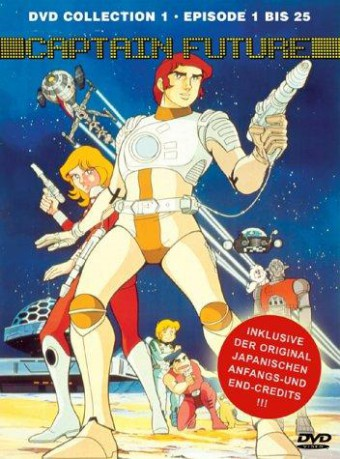

")
 
 IMDB-Wertung: 7.9 / 10
IMDB-Wertung: 7.9 / 10  Metascore:
Metascore: 
Im Jahre 2500: Captain Future ist der Sohn des genialen Wissenschaftlers Roger Newton. Als seine Eltern von dem überaus bösen Vul Kuuolon umgebracht werden, ist Curtis gerade acht Jahre alt. Grag, der Roboter und Otto, der Android übernehmen mit Simon Wrights Hilfe die Erziehung des jungen Captains. Dieser entschließt sich nach dem Tod seiner Eltern sein Leben in den Dienst des Guten zu stellen. Ihm zur Seite steht auch die hübsche Joan Landor. Zusammen durchqueren sie mit der Comet, ihrem treuen Schiff, Raum und Zeit um Frieden und Gerechtigkeit zu bewahren.
Jahr: 1978
Dauer: 26 Minuten
FSK:
Land: Frankreich Studio: AB VidéoTonspuren:
Untertitel:
Auflösung: 720p (960x720) Größe: 377 MB
Genre: Sci-Fi, Abenteuer, Animation/Trick, TV-Serie
Regisseur: Shigeo Hirota, Tomoharu Katsumata, Tomoji Katsumata, Kiyoshi Kawakubo, Jôhei Matsuura, Kôzô Morishita, Hideki Takayama, Akira Yokoi
Drehbuch: Monte Carlo Productions
Soundtrack:
Darsteller:
 Kazuhiko Inoue als Ken Scott
Kazuhiko Inoue als Ken Scott Friedrich G. Beckhaus als Grag
Friedrich G. Beckhaus als GragDatei: X:\Kinder Serien\Captain Future\Captain Future E01 Der Herrscher von Megara Die Rückverwandlung.mkv seit 04.07.2017
Festplatte: Kinder-Filme+Trick
 Es gibt insgesamt 56 Filme in der Gruppe 'Kinder Serien'
Es gibt insgesamt 56 Filme in der Gruppe 'Kinder Serien'